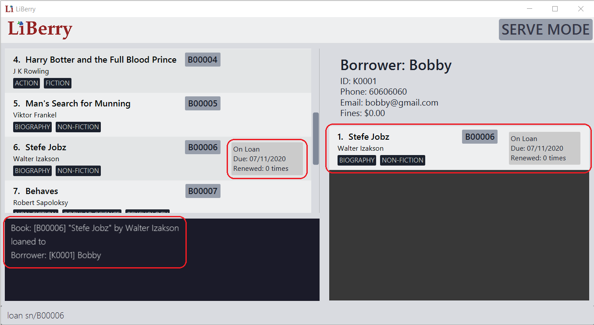

By: AY1920S1-CS2103T-F13-1 Since: Sep 2019 Licence: MIT
- 1. Introduction
- 2. Legend
- 3. Quick Start
- 4. Features
- 4.1. Using Normal Mode
- 4.1.1. Viewing help :
help - 4.1.2. Locating books by title:
find - 4.1.3. Viewing a book’s information:
info - 4.1.4. Clearing all entries :
clear - 4.1.5. Adding a book:
add - 4.1.6. Deleting a book :
delete - 4.1.7. Registering a new borrower:
register - 4.1.8. Unregistering a borrower:
unregister - 4.1.9. Undoing mistakes:
undo - 4.1.10. Redoing undone commands : redo
- 4.1.11. Setting User Settings:
set - 4.1.12. Toggling dark mode :
toggleui - 4.1.13. Rating a book :
rate- Coming in v2.0 - 4.1.14. Exiting the program :
exit - 4.1.15. Entering Serve Mode:
serve
- 4.1.1. Viewing help :
- 4.2. Using Serve Mode
- 4.3. Saving the Data
- 4.1. Using Normal Mode
- 5. FAQ
- 6. Command Summary
1. Introduction
LiBerry is a desktop app for librarians to quickly manage their community libraries! LiBerry is optimized for librarians who prefer to work with a Command Line Interface (CLI) while still having the benefits of a Graphical User Interface (GUI). You can type quickly and serve your long line of borrowers in a short amount of time.
LiBerry can manage all your books and borrowers efficiently and meticulously. You can easily add new books to your library records, register new borrowers, loan out books, track outstanding fines and more!
This user guide will introduce to you the different features of LiBerry and how to use them! Jump to Section 3, “Quick Start” to get started now! Enjoy!
2. Legend
| Denotes useful tips. |
| Denotes important details to take note of. |
3. Quick Start
Dive into LiBerry with our simple set-up guide for a quick tour of our user interface and features!
-
Ensure you have
Java 11or above installed in your Computer. -
Download the latest
LiBerry.jarhere. -
Copy the file to the folder you want to use as the home folder for your LiBerry.
-
Double-click the file to start the app. The GUI should appear in a few seconds.
Figure 1. Components of LiBerry’s User Interface (UI) -
The UI of LiBerry consists of 5 main components.
-
The command box where you input commands to interact with the software.
-
The command results display which provides feedback for your inputs.
-
The displayed book list which displays all the books in LiBerry’s catalog and also search results.
-
The borrower panel which displays information about a borrower and his/her borrowed books when LiBerry is in Serve mode.
-
The mode indicator which indicates if LiBerry is in Normal mode or Serve mode.
-
-
Type the command in the command box and press Enter to execute it.
e.g. typinghelpand pressing Enter will open the help window. -
Here are some commands you can try out:
-
Add a new book to LiBerry by using
add t/Animal Farm a/George Orwell -
Register a new borrower to LiBerry by using
register n/John Smith p/97875454 e/jsmith@gmail.com
-
-
Refer to Section 4, “Features” for details of each command.
4. Features
This section contains a detailed guide to every feature LiBerry supports, including how to use and the format of the commands to use the feature. The following table shows the format used to describe each command.
Command Format
-
Words in
UPPER_CASEare the parameters to be supplied by the user e.g. infind t/TITLE,TITLEis a parameter which can be used asfind t/Harry Potter. -
Items in square brackets are optional. E.g.
t/TITLE [g/GENRE]can be used ast/Harry Potter g/fictionor ast/Harry Potter. -
Curly brackets indicate that at least 1 of the optional parameters have to be given, e.g.
{ [t/TITLE] [a/AUTHOR] }can be used ast/Harry Potter -
Items with
… after them can be used multiple times including zero times, e.g.[g/GENRE]…can be used asg/fiction,g/fiction g/adventureetc. -
Parameters can be in any order e.g. if the command specifies
t/TITLE a/AUTHOR,a/AUTHOR t/TITLEis also acceptable.
4.1. Using Normal Mode
Normal Mode is for librarians to manage the books in the library. Commands in normal mode are not specific to any borrowers. Normal Mode also provides some utility commands to help the librarian use LiBerry. However, it is important to note that commands specific to Serve Mode cannot be used while in Normal Mode.
4.1.1. Viewing help : help
Opens up a help window, which shows a summary of the list
possible commands that you can execute.
The figure above shows a screenshot of the help window. The left side of the window shows the command while the right side of the window gives a description of the command and a usage example.
Format: help
4.1.2. Locating books by title: find
Shows all relevant books found.
Format: find [NUMBER] { [t/TITLE] [a/AUTHOR] [g/GENRE]… [sn/BOOK_SN] [-overdue] [-loaned] [-available] }
Format: find [NUMBER] { [t/TITLE] [a/AUTHOR] [g/GENRE]… [sn/BOOK_SN] [-overdue] [-loaned] [-available] [-rated] [-popular] [-new] } - Coming in v2.0
Inputs for g/GENRE is automatically capitalized.
|
t/TITLE and a/AUTHOR are matched by partial spellings. Search t/phil if you forgot how to spell 'Philosopher'!
|
Examples:
-
find t/Animal Farm a/George Orwell
Searches for the book titled “Animal Farm” by the author “George Orwell”. -
find 3 g/mystery g/children -available
Searches for children mystery books that are not on loan and show the first 3 entries.
4.1.3. Viewing a book’s information: info
Views more information about a book in the displayed list.
The information displayed includes:
-
Title of book
-
Genres of book, if any
-
Serial number of book
-
Author of book
-
Loan status of book
-
Loan history of book
Format: info INDEX
The figure below shows how an info window might look like.

In the window above, we can see that information related to the book 'Man’s Search for Munning' is displayed in a viewable window.
4.1.4. Clearing all entries : clear
Clears the most recent search from the displayed book list and displays all books.
Format: clear
4.1.5. Adding a book: add
Adds a new book to library records.
Format: add t/TITLE a/AUTHOR [sn/BOOK_SN] [g/GENRE]…
| A book can have up to 5 genres (but can have no genres as well). |
|
You do not need to specify the serial number if you wish so. LiBerry will then auto-generate a valid serial number for the new book. |
Examples:
-
add t/Harry Botter a/Raylei Jolking sn/B02010 g/children
Adds a children book titled "Harry Botter" by "Raylei Jolking", with the serial number "B02010", to LiBerry. -
add t/Inferno a/Tande g/classic g/epicAdds a book titled "Inferno" by "Tande", with the genres "classic" and "epic" to LiBerry. The serial number for this book will be automatically generated.
4.1.6. Deleting a book : delete
Deletes a book from the library records. Used when book is lost or trashed.
Format: delete INDEX or delete sn/BOOK_SN
Examples:
-
find t/harry
delete 1
Deletes the 1st book in the results of thefindcommand. -
delete sn/B00422
Deletes the book with serial numbersn/B00422.
4.1.7. Registering a new borrower: register
Registers a new borrower to the library records. A unique ID associated with the borrower will automatically be generated and displayed. Borrowers are expected to know his ID in order for loans to be processed.
Format: register n/NAME p/PHONE_NUMBER e/EMAIL
Example:
-
register n/matt p/83938249 e/matt@damon.com
Registers a new borrower called "matt", with phone number "83938249" and email "matt@damon.com" to LiBerry.
4.1.8. Unregistering a borrower: unregister
Unregisters and removes a borrower with the given borrower ID from the library records.
Format: unregister id/BORROWER_ID
Example:
-
unregister id/K0001
Deletes the borrower with the borrower IDid/K0001
4.1.9. Undoing mistakes: undo
Undoes the previous command/action. This command only works for commands that modifies the catalog, loan records, borrower records or user settings.
Undoable Commands:
-
add,delete,edit,loan,register,renew,return,set,toggleuiandunregister.
After every serve, done or pay command, all previous
state would be cleared. This means that you would not be able
to undo to the state before the serve, done or pay command.
|
Check the commands you made and ensure that they are correct
before entering a serve, done or pay command.
|
Format: undo
4.1.10. Redoing undone commands : redo
Redoes the most recent command that was undone. This
command only works if there are undone commands.
| Once a new undoable command is entered, you may not redo previously undone commands. |
Format: redo
4.1.11. Setting User Settings: set
Sets the user settings for loan period (in days), renew period (in days), fine increment (in cents) and maximum renews allowed.
Format: set [lp/LOAN_PERIOD] [rp/RENEW_PERIOD] [fi/FINE_INCREMENT] [mr/MAX_RENEWS]
Examples:
-
set
Shows the current user settings.
The figure below show the user interface
after the set command has been added. The yellow box shows the change to
the result display as now it shows the current user settings of the application.
-
set lp/7 rp/7 fi/5 mr/2
Sets the loan period to 7 days, renew period to 7 days, fine increment to 5 cents per day and maximum renews allowed to 2.

The figure above shows the user interface before the set command is executed. The yellow box shows the set command that is being entered.
After entering the set command, the user settings would be updated. The updated user settings will then be displayed in the result display as shown in the yellow box in the figure above.
4.1.12. Toggling dark mode : toggleui
Toggles between light mode and dark mode for the UI.
Format: toggleui
4.1.13. Rating a book : rate - Coming in v2.0
Gives a book a numerical rating.
Format: rate INDEX r/RATING
4.1.15. Entering Serve Mode: serve
Enters Serve Mode. All commands/actions will be done on this specific borrower. A list of the borrower’s currently loaned books and their serial numbers will be displayed.
Borrower ID is used as the borrower will produce their library card which contains their ID to the librarian to be served.
Format: serve id/BORROWER_ID
Example:
-
serve id/K0001
Enters save mode to serve a borrower with the IDK0001
4.2. Using Serve Mode
The Serve Mode is for librarians to serve borrowers. All commands in Serve Mode are done on a specific borrower currently served by the librarian.
All commands in Normal Mode, except for serve and exit, can be used in Serve Mode too.
The command unregister cannot be used on the currently serving borrower.
4.2.1. Exiting Serve Mode: done
Exits Serve Mode.
Format: done
After loaning all books, upon the done command, a printable loan slip in pdf format will be generated.
The loan slip will be opened in your computer’s pdf viewer and also saved in the loan_slips folder.
The figure below shows an example of how a loan slip might look like.
In the figure above, we can see that the loan slip records all the books borrowed by 'Bill'.
4.2.2. Editing a borrower: edit
Edit borrower’s particulars.
Format: edit { [n/NAME] [p/PHONE_NUMBER] [e/email] }
Examples:
-
edit p/91234567 e/jane@austen.com
Edits the phone number and borrower’s email address to be91234567andjane@austen.comrespectively. -
edit n/Betsy Crower
Edits the name of the borrower to beBetsy Crower.
4.2.3. Loaning book(s): loan
Loan book(s) to the currently served borrower.
The serial number of the book is used as the borrower would bring the physical copy of the book they want to borrow
to you. Thus, you do not have to search for the index of the book in the displayed book list.
Format: loan sn/BOOK_SN
Format: loan sn/BOOK_SN [sn/BOOK_SN]… - Coming in v2.0
Examples:
-
loan sn/B00006
You loan out the book with serial number B00006 to the currently served borrower.
Figure 8. The user interface after the book is loaned out.After this command is entered, the command results display will provide you with a summary of which book is loaned out and tho who it is loaned to. As seen from the screenshot, the book will also be added to the list of currently loaned out books in the borrower’s panel on the right. Inside the main list on the left, an on-loan box would also indicate this book as being loaned out.
-
loan sn/B00201 sn/B02929 sn/B00203- Coming in v2.0
You loan out the books with serial numbers B00201, B02929 and B00203 to the currently served borrower.
4.2.4. Returning book(s): return
Return book(s) that were loaned by the borrower.
Fine incurred for late returns will automatically be calculated and added to
the borrower’s total outstanding fines.
Format: return INDEX or return -all
4.2.5. Renewing book(s): renew
Renew book(s) that are still loaned by the borrower, i.e., extend their due dates.
Format: renew INDEX or renew -all
4.2.6. Paying fines: pay
Receive AMOUNT (in dollars and up to 2 decimal places) from the currently served borrower to pay off his/her outstanding fines.
Format: pay $AMOUNT
Examples:
-
pay $12.80
You receive $12.80 from the borrower to pay off his/her fine.
 Figure 10. The command results display after paying fines.
Figure 10. The command results display after paying fines.As seen from the screenshot above, after a fine amount is paid, a summary can be seen. You will see any outstanding fine the borrower still has. If the borrower pays an amount greater than his/her total outstanding fine, you can refer to the change given line to see how much change you should return to the borrower.
-
pay $5
You receive $5 from the borrower to pay off his/her fine.
4.2.7. Reserving a book: reserve - Coming in v2.0
Reserve a particular book for the borrower.
Format: reserve INDEX or reserve sn/BOOK_SN
Examples:
-
reserve 2
Reserves the 2nd book shown in the displayed book list for the currently served borrower. -
reserve sn/B02422
Reserves the book with serial numbersn/B02422for the currently served borrower.
4.3. Saving the Data
LiBerry data are saved in the hard disk automatically after any command that changes the data. There is no need to save manually.
Data saved should not be manually edited to prevent files from being corrupted.
5. FAQ
Q: How do I transfer my data to another Computer?
A: Install the app in the other computer and overwrite the empty data file it creates with the file that contains the data of your previous LiBerry folder.
6. Command Summary
This section contains the summary of LiBerry’s commands.
Commands applicable to both Normal and Serve mode:
-
Help :
help -
Find a book :
find [NUMBER] { [t/TITLE] [a/AUTHOR] [g/GENRE]… [sn/BOOK_SN]] [-overdue] [-loaned] [-available] }
e.g.find t/Animal Farm a/George Orwell,find 3 g/mystery g/children -available
[-rated] [-popular] [-new]- Coming in v2.0 -
View book info :
info INDEX -
Clear results :
clear -
Add a book :
add t/TITLE a/AUTHOR sn/BOOK_SN [g/GENRE]… `
e.g. `add t/Harry Botter and the Baby’s Potty a/Reali Jolking sn/B02010 g/children -
Delete a book :
delete INDEXordelete sn/BOOK_SN -
Register a borrower :
register n/NAME p/PHONE_NUMBER e/EMAIL
e.g.register n/matt p/83938249 e/matt@damon.com -
Unregister a borrower :
unregister id/BORROWER_ID -
Undo :
undo -
Redo :
redo -
Set user settings:
set [lp/LOAN_PERIOD] [rp/RENEW_PERIOD] [fi/FINE_INCREMENT] [mr/MAX_RENEWS] -
Toggle UI theme:
toggleui -
Rate a book :
rate INDEX r/RATING- Coming in v2.0 -
Exit :
exit -
Enter Serve mode :
serve id/BORROWER_ID
e.g.serve id/K0001
Commands applicable to Serve mode only:
-
Exit serve mode :
done -
Edit a borrower’s particulars :
edit { [n/NAME] [p/PHONE_NUMBER] [e/email] }
e.g.edit p/91234567 e/jane@austen.com -
Loan book :
loan sn/BOOK_SN
e.g.loan sn/B00201 -
Return book(s) :
return INDEXorreturn -all -
Renew book(s) :
renew INDEXorrenew -all -
Pay fines :
pay $AMOUNT -
Reserve book :
reserve INDEXorreserve sn/BOOK_SN- Coming in v2.0